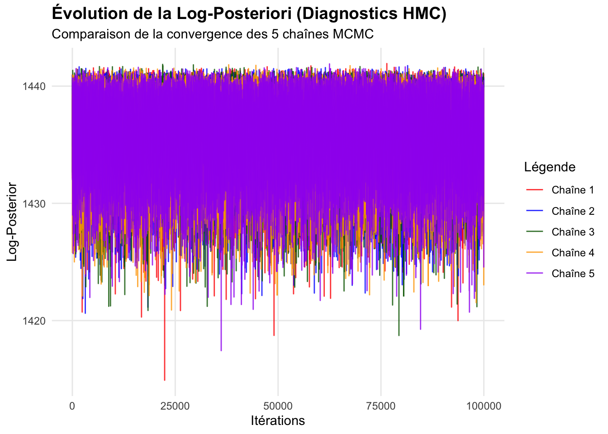
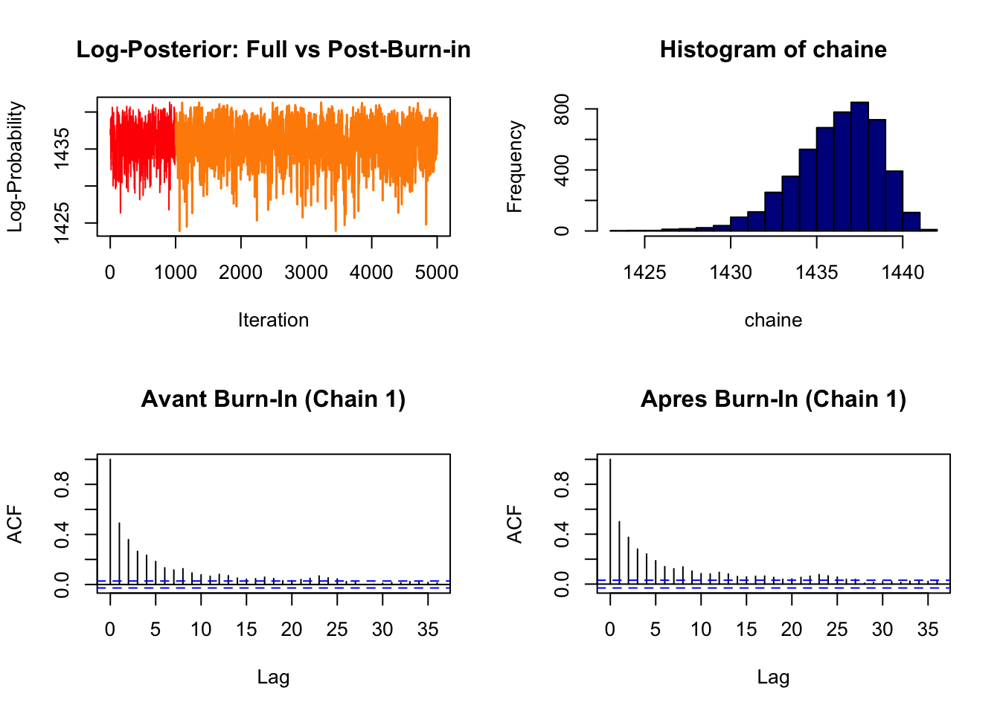
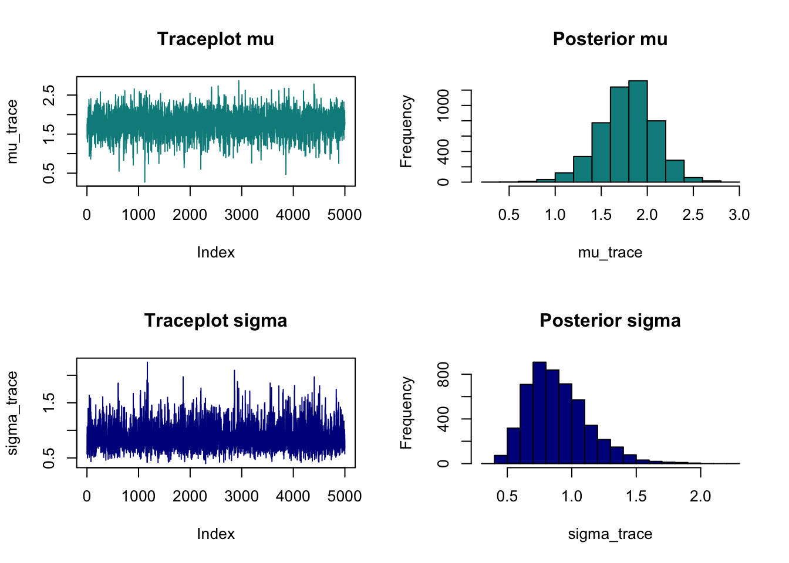
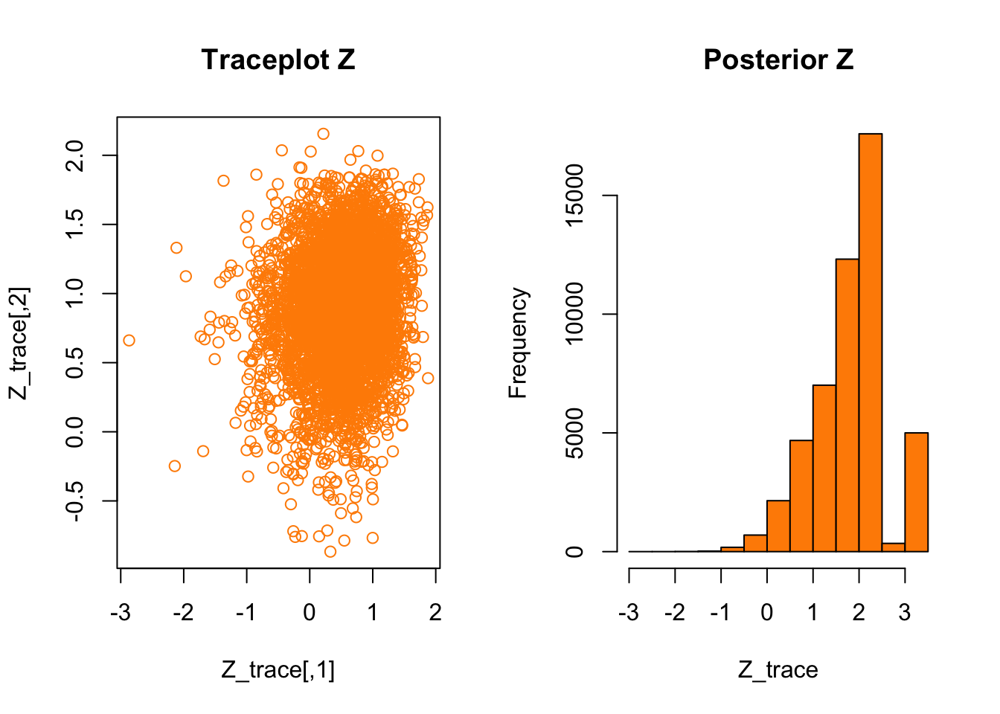
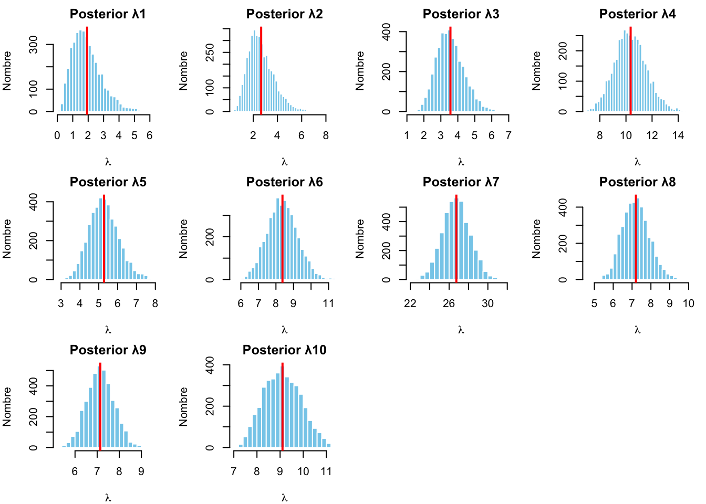
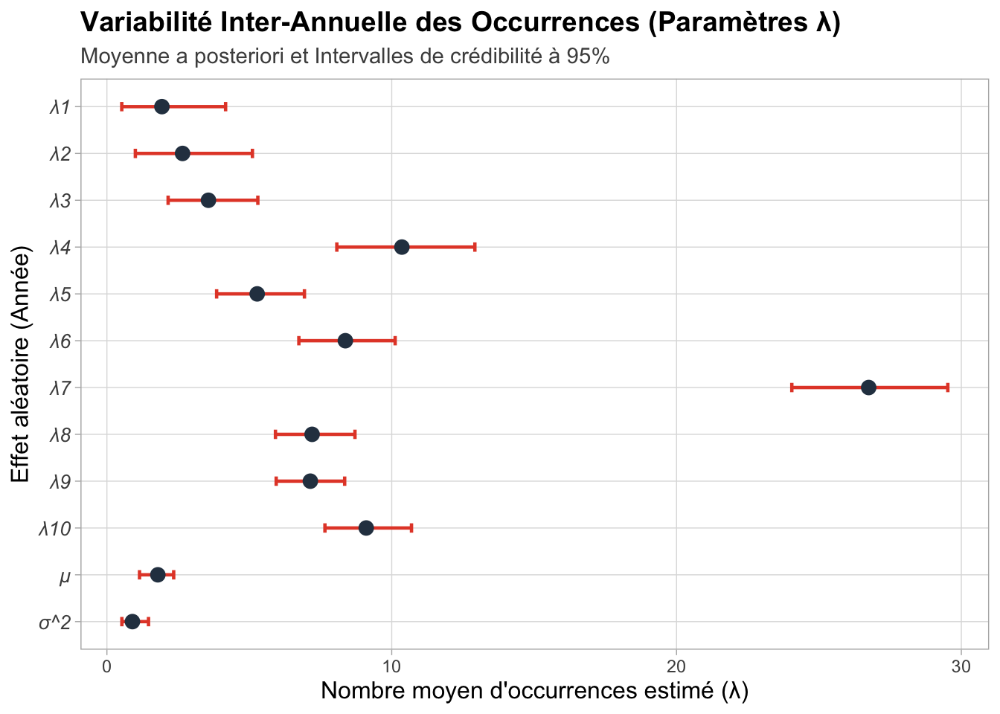
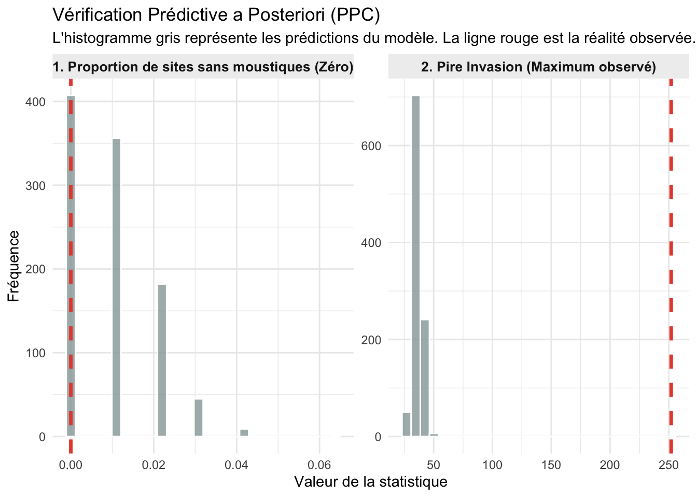

On cherche à estimer \(\mu\) et \(\sigma^2\), et à prédire les \(\lambda_i\).Ces derniers, appelés effets aléatoires, représentent la moyenne (et également la variance) annuelle des occurrences.
# ------------------------------------------------------------------------------# CHARGEMENT ET PRÉ-TRAITEMENT DES DONNÉES# ------------------------------------------------------------------------------# Calcul des agrégats annuels (données synthétiques par année)df_annual <- summary_table %>%group_by(year) %>%summarise(Y_sum =sum(n_occurrences), # Nombre total de moustiques capturés par anJ_counts =n_distinct(stateProvince) # Nombre de provinces ayant rapporté des données ) %>%arrange(year)# Extraction sous forme de vecteurs pour le modèleY <- df_annual$Y_sumJ <- df_annual$J_countsI <-nrow(df_annual) # Nombre total d'années d'observation (généralement 12)
3 La fonction de log-posteriori
log_posterior <-function(Z, Y, J, mu, gamma) { sigma2 <-exp(gamma)# Terme 1: Vraisemblance de Poisson log_vrais <-sum(Y * Z - J *exp(Z))# Terme 2: Loi a priori conditionnelle des Zi (Loi Normale) log_prior_Z <-sum(dnorm(Z, mean = mu, sd =sqrt(sigma2), log =TRUE))# Terme 3: Loi a priori de μ, σ2 log_prior_mu <-dnorm(mu, mean =0, sd =2, log =TRUE) log_prior_sigma2 <-dexp(sigma2, rate =1, log =TRUE) + gamma res <- log_vrais + log_prior_Z + log_prior_mu + log_prior_sigma2if (is.na(res) ||is.infinite(res)) return(-1e20) return(res)}
4 Les fonctions de gradients
# ------------------------------------------------------------------------------# Gradient de l'Énergie Potentielle U(theta) = -log_posterior# ------------------------------------------------------------------------------# Calcul du gradient de l'énergie (nabla U) pour l'algorithme HMC.# Rappel : U = -log(pi(theta|y)), nous implémentons ici les dérivées # partielles analytiques obtenues précédemment.# ------------------------------------------------------------------------------# Derivees partielles par rapport aux Zi (Vectorise)grad_Z <-function(Z, Y, J, mu, gamma) { sigma2 <-exp(gamma)return(J *exp(Z) - Y + (Z - mu) / sigma2)}# # Derivee partielle par rapport à mugrad_mu <-function(Z, mu, gamma) { sigma2 <-exp(gamma)return(sum(mu - Z) / sigma2 + mu /4)}# Dérivée partielle par rapport à gamma (log-variance)# Inclut la correction du Jacobien pour la reparamétrisationgrad_gamma <-function(Z, mu, gamma) { sigma2 <-exp(gamma) I <-length(Z)return(-sum((Z - mu)^2) / (2* sigma2) + I /2+exp(gamma) -1)}
5 Algorithme Hamiltonian Monte Carlo avec méthode de leapfrog
# ------------------------------------------------------------------------------# MOTEUR PHYSIQUE : HAMILTONIAN MONTE CARLO# ------------------------------------------------------------------------------# 1. Algorithme Leapfrog# Cette fonction simule la trajectoire hamiltonienne en mettant à jour# alternativement les positions et les impulsions.# ------------------------------------------------------------------------------leapfrog <-function(Z, mu, gamma, P_Z, P_mu, P_gamma, Y, J, eps, L, f_grad_Z, f_grad_mu, f_grad_gamma) {# Premier demi-pas pour les impulsions (Momentum half-step) P_Z <- P_Z -0.5* eps *f_grad_Z(Z, Y, J, mu, gamma) P_mu <- P_mu -0.5* eps *f_grad_mu(Z, mu, gamma) P_gamma <- P_gamma -0.5* eps *f_grad_gamma(Z, mu, gamma)for (l in1:L) {# Mise à jour des positions (Position update) Z <- Z + eps * P_Z mu <- mu + eps * P_mu gamma <- gamma + eps * P_gammaif (l < L) {# Mise à jour complète des impulsions (sauf pour le dernier pas) P_Z <- P_Z - eps *f_grad_Z(Z, Y, J, mu, gamma) P_mu <- P_mu - eps *f_grad_mu(Z, mu, gamma) P_gamma <- P_gamma - eps *f_grad_gamma(Z, mu, gamma) } }# Dernier demi-pas pour les impulsions (Final momentum half-step) P_Z <- P_Z -0.5* eps *f_grad_Z(Z, Y, J, mu, gamma) P_mu <- P_mu -0.5* eps *f_grad_mu(Z, mu, gamma) P_gamma <- P_gamma -0.5* eps *f_grad_gamma(Z, mu, gamma)return(list(Z = Z, mu = mu, gamma = gamma, P_Z = P_Z, P_mu = P_mu, P_gamma = P_gamma))}
# ------------------------------------------------------------------------------# Fonction principal Hamiltonian Monte Carlo # ------------------------------------------------------------------------------HMC_step_MC <-function(Z, mu, gamma, Y, J, eps, L, lp_func, f_grad_Z, f_grad_mu, f_grad_gamma) {# 1. Initialisation des impulsions aleatoire P_Z_init <-rnorm(length(Z)) P_mu_init <-rnorm(1) P_gamma_init <-rnorm(1)# 2. Calcul de l'énergie initiale (Hamiltonien initial) init_U <--lp_func(Z, Y, J, mu, gamma) init_K <-sum(P_Z_init^2)/2+ P_mu_init^2/2+ P_gamma_init^2/2# 3. Simulation de la trajectoire avec l'intégrateur Leapfrog res <-leapfrog(Z, mu, gamma, P_Z_init, P_mu_init, P_gamma_init, Y, J, eps, L, f_grad_Z, f_grad_mu, f_grad_gamma)# 4. Calcul de l'énergie finale (Hamiltonien final) final_U <--lp_func(res$Z, Y, J, res$mu, res$gamma) final_K <-sum(res$P_Z^2)/2+sum(res$P_mu^2)/2+sum(res$P_gamma^2)/2# 5. Étape d'acceptation de Metropolis-Hastingsif (log(runif(1)) < (init_U + init_K - final_U - final_K)) {return(list(Z = res$Z, mu = res$mu, gamma = res$gamma, accepted =TRUE)) } else {return(list(Z = Z, mu = mu, gamma = gamma, accepted =FALSE)) }}
# ------------------------------------------------------------------------------# Fonction pour exécuter une chaîne MCMC (Hamiltonian Monte Carlo)# ------------------------------------------------------------------------------run_chain <-function(id, n_iter, Y, J, eps, L) {cat(sprintf("Exécution de la Chaîne %d...\n", id))# 1. Initialisation des paramètres (Valeurs de départ)# On utilise les données observées pour un démarrage proche de la zone cible curr_Z <-log((Y / J) +0.1) curr_mu <-mean(curr_Z) curr_gamma <-log(var(curr_Z) +0.01) # Initialisation de la log-variance# 2. Préparation des structures de stockage (Traces) mu_trace <-numeric(n_iter) sigma_trace <-numeric(n_iter) Z_trace <-matrix(0, n_iter, length(Y)) # Stockage pour les 12 années lp_trace <-numeric(n_iter) # Évolution du log-posterior# Compteur pour le taux d'acceptation accepted_count <-0# 3. Boucle principale d'échantillonnagefor (k in1:n_iter) {# Appel de l'étape HMC pour mettre à jour l'état de la chaîne res <-HMC_step_MC(curr_Z, curr_mu, curr_gamma, Y, J, eps, L, lp_func = log_posterior, f_grad_Z = grad_Z, f_grad_mu = grad_mu, f_grad_gamma = grad_gamma)# Mise à jour des valeurs actuelles (Acceptées ou Rejetées) curr_Z <- res$Z curr_mu <- res$mu curr_gamma <- res$gammaif (res$accepted) { accepted_count <- accepted_count +1 }# 4. Stockage des échantillons et transformation de gamma en sigma mu_trace[k] <- curr_mu sigma_trace[k] <-sqrt(exp(curr_gamma)) # Retour à l'écart-type original Z_trace[k, ] <- curr_Z# Calcul de la densité log-posterior pour le suivi de la convergence lp_trace[k] <-log_posterior(curr_Z, Y, J, curr_mu, curr_gamma) # 5. Affichage de la progressionif (k %% (n_iter /4) ==0) { current_acc_rate <- (accepted_count / k) *100cat(sprintf(" Chaîne %d | Progression : %d / %d (%d%%) | Taux d'acc. : %.1f%%\n", id, k, n_iter, round(k/n_iter*100), current_acc_rate)) } }# Retourne les résultats sous forme de liste final_acc_rate <- (accepted_count / n_iter) cat(sprintf("=> Chaîne %d terminée avec succès. Taux d'acceptation final : %.2f%%\n", id, final_acc_rate*100))return(list(mu = mu_trace, sigma = sigma_trace, Z = Z_trace, lp = lp_trace, acc_rate = final_acc_rate))#return(list(mu = mu_trace, sigma = sigma_trace, Z = Z_trace, lp = lp_trace))}
6 DIAGNOSTICS DE CONVERGENCE ET PERFORMANCES
# ------------------------------------------------------------------------------# Main de lancement de la Simulation MCMC (Multi-chaînes)# ------------------------------------------------------------------------------# Configuration des hyperparamètres de l'algorithme HMCn_chains <-5# Nombre de chaînes indépendantes pour tester la convergencen_iter <-100000# Nombre total d'itérations par chaîneeps <-0.02# Taille du pas (Step size) - à ajuster selon l'acceptationL <-100# Nombre de pas Leapfrog par itération# Initialisation de la liste pour stocker les résultats de chaque chaîneall_results <-list()# Exécution des chaînes en boucleset.seed(123) for (i in1:n_chains) { start_time <-Sys.time() # Chronométrage pour estimer le temps total all_results[[i]] <-run_chain(i, n_iter, Y, J, eps, L) end_time <-Sys.time()cat(sprintf("Chaîne %d terminée en %.2f minutes.\n", i, as.numeric(end_time - start_time, units="mins")))}
library(ggplot2)library(tidyr)library(dplyr)# 1. Préparation des données pour ggplot2# Extraction de la log-postériore pour toutes les chaînes de simulationlp_data <-data.frame(Iteration =1:n_iter,Chaine_1 = all_results[[1]]$lp,Chaine_2 = all_results[[2]]$lp,Chaine_3 = all_results[[3]]$lp,Chaine_4 = all_results[[4]]$lp,Chaine_5 = all_results[[5]]$lp)# Transformation des données du format large au format long pour ggplot2lp_long <- lp_data %>%pivot_longer(cols =starts_with("Chaine"), names_to ="Chaine", values_to ="Log_Posterior")# 2. Visualisation avec ggplot2ggplot(lp_long, aes(x = Iteration, y = Log_Posterior, color = Chaine)) +geom_line(alpha =0.8) +theme_minimal() +# Utilisation de scale_color_manual pour définir manuellement les couleursscale_color_manual(values =c("Chaine_1"="red", "Chaine_2"="blue", "Chaine_3"="darkgreen", "Chaine_4"="orange", "Chaine_5"="purple" ),labels =paste("Chaîne", 1:5) # Mise à jour des noms affichés dans la légende ) +# Configuration des étiquettes et du titre du graphiquelabs(title ="Évolution de la Log-Posteriori (Diagnostics HMC)",subtitle ="Comparaison de la convergence des 5 chaînes MCMC",x ="Itérations",y ="Log-Posterior",color ="Légende" ) +# Personnalisation esthétique du thèmetheme(legend.position ="right",plot.title =element_text(face ="bold", size =14),panel.grid.minor =element_blank() )

La figure montre une convergence rapide des cinq chaînes vers une même zone de forte densité. Leur superposition indique un excellent mélange et une exploration efficace de l’espace des paramètres.
La stabilité des trajectoires confirme que la phase de chauffe (burn-in) est suffisante et que les estimations postérieures obtenues sont fiables.
# ---------------------------------------------------------# Main run 1 chain # ---------------------------------------------------------n_chains <-1n_iter <-5000eps <-0.02L <-100all_results <-list()for (i in1:n_chains) { start_time <-Sys.time() all_results[[i]] <-run_chain(i, n_iter, Y, J, eps, L) end_time <-Sys.time()cat(sprintf("Chaîne %d terminée en %.2f minutes.\n", i, as.numeric(end_time - start_time, units="mins")))}
par(mfrow=c(2,2))# Diagnostic de la Chaîne 1 : Analyse du Burn-in et de l'Autocorrélationchaine <- all_results[[1]]$lpchaine_after_burnin <- all_results[[1]]$lp[1001:5000]# 1. Tracé de la trajectoire (Traceplot) de la Log-Posteriorplot(chaine, type="l", col="red", main="Log-Posterior: Full vs Post-Burn-in", xlab="Iteration", ylab="Log-Probability")lines(1001:5000, chaine_after_burnin, col="darkorange", lwd=1.5)# 2. Histogramme de la distribution de la Log-Posteriorhist(chaine,col="darkblue")# 3. Analyse de l'autocorrélation avant Burn-inacf(chaine, main="Avant Burn-In (Chain 1)")# 4. Analyse de l'autocorrélation après Burn-inacf(chaine_after_burnin, main="Apres Burn-In (Chain 1)")

L’analyse de la fonction d’autocorrélation (ACF) montre une diminution rapide de la corrélation entre les itérations successives. Après quelques lags, l’autocorrélation devient négligeable, indiquant que les échantillons générés sont quasiment indépendants.
Cette propriété témoigne de l’efficacité de l’algorithme HMC, qui permet une exploration plus rapide de l’espace des paramètres que les méthodes MCMC classiques. De plus, la stabilité observée après la phase de burn-in confirme que les échantillons utilisés pour l’inférence proviennent bien d’une distribution stationnaire.
# Plotspar(mfrow=c(2,2))# Visualisation des paramètres globaux (Mu et Sigma) - Chaîne 1# --- ANALYSE DE MU (Moyenne globale des log-intensités) ---mu_trace <- all_results[[1]]$muplot(mu_trace, type="l" ,col="darkcyan", main="Traceplot mu")hist(mu_trace, col="darkcyan",main="Posterior mu")# --- ANALYSE DE SIGMA (Écart-type de la variabilité interannuelle) ---sigma_trace <- all_results[[1]]$sigmaplot(sigma_trace, type="l",col="darkblue", main="Traceplot sigma")hist(sigma_trace,col="darkblue", main="Posterior sigma")

# Visualisation des paramètres latents Zipar(mfrow=c(1,2))# Récupération de la trace des paramètres Z pour la première chaîneZ_trace <- all_results[[1]]$Z# 1. Nuage de points (Scatter plot) de tous les Z cumulésplot(Z_trace, type="p",col="darkorange", main="Traceplot Z")# 2. Histogramme global de la distribution des Zhist(Z_trace,col ="darkorange", main="Posterior Z")

# Transformation des paramètres et construction de la matrice finale# ------------------------------------------------------------------------------# Conversion des log-intensités (Z) en intensités réelles (Lambda)# On applique la fonction exponentielle pour revenir à l'échelle naturelleZ_samples <- Z_traceλ_samples <-exp(Z_samples)# Regroupement des Lambda (12 colonnes), de Mu et de Sigmasamples_matrix <-cbind(λ_samples, mu_trace, sigma_trace )n_l <-ncol(λ_samples)colnames(samples_matrix) <-c(paste0("λ", 1:n_l), "μ", "σ^2")head(round(samples_matrix,5))
# Visualisation des distributions postérieures pour chaque Lambda (Années 1-12)# ------------------------------------------------------------------------------par(mfrow=c(3, 4), mar=c(4, 4, 2, 1)) # 1. Détermination du nombre de paramètres lambdan_lambda <-ncol(λ_samples) # 2. Boucle pour générer les histogrammes (après exclusion de la période de burn-in)burn_in <-1001for (i in1:n_lambda) {hist(λ_samples[burn_in:n_iter, i], breaks =30, col ="skyblue", border ="white",main =paste("Posterior", colnames(samples_matrix)[i]),xlab =expression(lambda),ylab ="Nombre")# Ajout d'une ligne verticale pour représenter la moyenne (Mean)abline(v =mean(λ_samples[burn_in:n_iter, i]), col ="red", lwd =2)}# Réinitialisation de la disposition graphique par défaut (1x1)par(mfrow=c(1, 1))

Les distributions postérieures des paramètres \(\lambda_1\) à \(\lambda_{12}\) montrent une augmentation progressive de l’intensité de présence du moustique tigre au cours du temps. Les estimations passent d’une faible valeur initiale (\(\lambda_1 \approx 2,5\)) à un niveau beaucoup plus élevé vers l’année 10 (\(\lambda_{10} \approx 26,5\)), mettant en évidence une forte variabilité inter-annuelle.
Par ailleurs, les distributions deviennent plus concentrées au fil des années, ce qui traduit une diminution de l’incertitude et une amélioration de la précision des estimations grâce à des données plus abondantes.
7 Estimateurs ponctuels et des intervalles de confiances pour chaque parametre
# Eliminer 1000 premiere ligne clean_samples <- samples_matrix[1001:5000, ]# 1.Posterior Mean)post_mean <-colMeans(clean_samples)# 2. Interval de confiances 95% (95% Credible Interval)post_ci <-apply(clean_samples, 2, quantile, probs =c(0.025, 0.975))# 3. Met dans un tableau results <-data.frame(Parameter =colnames(clean_samples),Estimate = post_mean,CI_lower = post_ci[1, ],CI_upper = post_ci[2, ])print(results)
library(ggplot2)# ------------------------------------------------------------------------------# 7. Création du Forest Plot (Adapté à vos noms de colonnes)# ------------------------------------------------------------------------------# 1. Préparation de l'ordre des paramètres# On utilise 'Parameter' car c'est le nom dans votre tableau resultsresults$Parameter <-factor(results$Parameter, levels =rev(results$Parameter))# 2. Génération du graphique Forest Plotggplot(results, aes(x = Parameter, y = Estimate)) +# Barres d'erreur (on utilise CI_lower et CI_upper de votre tableau)geom_errorbar(aes(ymin = CI_lower, ymax = CI_upper), width =0.2, color ="#E44A33", # Le rouge de l'imagesize =0.8) +# Points de la moyenne (on utilise Estimate de votre tableau)geom_point(size =3, color ="#2C3E50") +# Inversion des axes pour l'effet horizontalcoord_flip() +# Style visueltheme_light() +# Titres en françaislabs(title ="Variabilité Inter-Annuelle des Occurrences (Paramètres λ)",subtitle ="Moyenne a posteriori et Intervalles de crédibilité à 95%",x ="Effet aléatoire (Année)",y ="Nombre moyen d'occurrences estimé (λ)" ) +# Esthétique du textetheme(plot.title =element_text(face ="bold", size =14, hjust =0),plot.subtitle =element_text(size =11, color ="grey30"),panel.grid.minor =element_blank(),axis.text.y =element_text(size =10, face ="italic"),axis.title =element_text(size =12) )

Les estimations a posteriori des paramètres \(\lambda_i\) montrent une augmentation marquée de l’intensité de présence du moustique tigre au cours du temps. Une transition nette apparaît entre les premières années (\(\lambda < 5\)) et les années 7 à 10, caractérisées par une forte croissance de l’abondance.
L’année 10 se distingue par une estimation particulièrement élevée (\(\hat{\lambda}_{10} \approx 26,6\)), influencée par l’observation d’un site ayant enregistré un nombre exceptionnel de moustiques. Malgré cette valeur extrême, le modèle hiérarchique fournit une estimation stable grâce au partage d’information entre les années.
Les intervalles de crédibilité à 95 % permettent d’évaluer l’incertitude des estimations. Les premières années présentent des intervalles plus larges, tandis que les années récentes bénéficient d’estimations plus précises, reflétant la disponibilité de données plus abondantes et une meilleure confiance statistique.
8 Analyser la qualité prédictive du modèle.
# Création de y_list : chaque élément de la liste est un vecteur contenant # le nombre d'occurrences (moustiques) par province pour chaque année.y_list <-split(df$n_occurrences, df$i)# Extraction des résultats de la Chaîne 1 (MCMC)res_chain1 <- all_results[[1]]# Élimination de la période de chauffe (burn-in, ex: 1000 premières itérations)burn_in <-1001n_iter_total <-length(res_chain1$mu)indices_kept <- burn_in:n_iter_total# Création d'un dataframe contenant les valeurs de lambda_i (exp(Z_i))# On transforme les échantillons de Z (espace log) en intensité réelle (lambda)lambda_samples <-exp(res_chain1$Z[indices_kept, ])colnames(lambda_samples) <-paste0("lambda_", 1:ncol(lambda_samples))# Conversion en structure dataframe pour faciliter les analyses PPC suivantessamples_df <-as.data.frame(lambda_samples)
library(ggplot2)# --- 1. Préparation des données observées (Réalité) ---y_obs <-unlist(y_list) # Liste des occurrences observées par anstat_obs_zero <-mean(y_obs ==0) # Proportion réelle de zérosstat_obs_max <-max(y_obs) # Valeur maximale réelle observée# --- 2. Configuration de la simulation ---n_samples_ppc <-1000set.seed(42) # Pour la reproductibilitéindices_ppc <-sample(1:nrow(samples_df), n_samples_ppc)rep_stat_zero <-numeric(n_samples_ppc)rep_stat_max <-numeric(n_samples_ppc)I <-length(y_list) # Nombre d'années (12)J_list <-sapply(y_list, length) # Nombre de sites par annéecat("Génération des données prédictives a posteriori en cours...\n")
Génération des données prédictives a posteriori en cours...
# --- 3. Boucle de simulation des données répliquées (y_rep) ---for (t in1:n_samples_ppc) { idx <- indices_ppc[t] y_rep_t <-numeric(0)for (i in1:I) {# Extraction du lambda pour l'année i à l'itération t lambda_i_t <- samples_df[idx, paste0("lambda_", i)]# Simulation de nouvelles observations selon la loi de Poisson# J_list[i] représente l'effort d'échantillonnage de l'année i y_rep_t <-c(y_rep_t, rpois(J_list[i], lambda = lambda_i_t)) }# Calcul des statistiques sur les données simulées rep_stat_zero[t] <-mean(y_rep_t ==0) rep_stat_max[t] <-max(y_rep_t)}# --- 4. Calcul des P-values bayésiennes ---# Si la p-value est proche de 0.5, le modèle est bien ajusté.p_val_zero <-mean(rep_stat_zero >= stat_obs_zero)p_val_max <-mean(rep_stat_max >= stat_obs_max)cat(sprintf("P-value bayésienne (Proportion de zéros) : %.3f\n", p_val_zero))
# --- 5. Visualisation graphique ---ppc_long <-data.frame(Valeur =c(rep_stat_zero, rep_stat_max),Statistique =rep(c("1. Proportion de sites sans moustiques (Zéro)", "2. Pire Invasion (Maximum observé)"), each = n_samples_ppc))obs_lines <-data.frame(Valeur_obs =c(stat_obs_zero, stat_obs_max),Statistique =c("1. Proportion de sites sans moustiques (Zéro)", "2. Pire Invasion (Maximum observé)"))ppc_plot <-ggplot(ppc_long, aes(x = Valeur)) +geom_histogram(fill ="#95A5A6", color ="white", bins =30, alpha =0.8) +geom_vline(data = obs_lines, aes(xintercept = Valeur_obs), color ="#E74C3C", linewidth =1.2, linetype ="dashed") +facet_wrap(~ Statistique, scales ="free") +theme_minimal() +labs(title ="Vérification Prédictive a Posteriori (PPC)",subtitle ="L'histogramme gris représente les prédictions du modèle. La ligne rouge est la réalité observée.",x ="Valeur de la statistique",y ="Fréquence" ) +theme(strip.background =element_rect(fill ="#EFEFEF", color =NA),strip.text =element_text(face ="bold", size =10) )print(ppc_plot)

Les résultats montrent que le modèle tend à légèrement surestimer le nombre de sites sans moustiques, ce qui suggère une surestimation modérée de la probabilité d’absence. Cette différence peut être liée aux limites de la loi de Poisson pour représenter des données très dispersées.
Par ailleurs, le modèle sous-estime les événements extrêmes. La valeur maximale observée (252 moustiques) est largement supérieure aux valeurs simulées, indiquant qu’un épisode exceptionnel n’est pas entièrement capturé par le modèle.
Malgré cette limite, le modèle reproduit correctement la tendance générale et la variabilité inter-annuelle de l’invasion du moustique tigre.